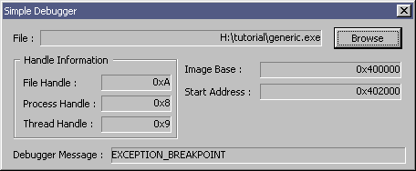

|
Tutorial 28 : Win32 Debug API Part 1
format PE GUI 4.0
entry start
include '%fasminc%\win32a.inc'
struct EXCEPTION_RECORD
.ExceptionCode dd ?
.ExceptionFlags dd ?
.ExceptionRecord dd ?
.ExceptionAddress dd ?
.NumberParameters dd ?
.ExceptionInformation rd 15
ends
struct EXCEPTION_DEBUG_INFO
.ExceptionRecord EXCEPTION_RECORD
.dwFirstChance dd ?
ends
struct CREATE_PROCESS_DEBUG_INFO
.hFile dd ?
.hProcess dd ?
.hThread dd ?
.lpBaseOfImage dd ?
.dwDebugInfoFileOffset dd ?
.nDebugInfoSize dd ?
.lpThreadLocalBase dd ?
.lpStartAddress dd ?
.lpImageName dd ?
.fUnicode dw ?
ends
struct EXIT_PROCESS_DEBUG_INFO
.dwExitCode dd ?
ends
struct DEBUG_EVENT
.dwDebugEventCode dd ?
.dwProcessId dd ?
.dwThreadId dd ?
.u rd 22
ends
INFINITE = 0xFFFFFFFF
DBG_EXCEPTION_NOT_HANDLED = 0x80010001
DBG_CONTINUE = 0x00010002
DBG_TERMINATE_THREAD = 0x40010003
DBG_TERMINATE_PROCESS = 0x40010004
EXIT_PROCESS_DEBUG_EVENT = 0x00000005
CREATE_PROCESS_DEBUG_EVENT = 0x00000003
EXCEPTION_DEBUG_EVENT = 0x00000001
CREATE_THREAD_DEBUG_EVENT = 0x00000002
EXIT_THREAD_DEBUG_EVENT = 0x00000004
EXCEPTION_BREAKPOINT = 0x80000003
WMU_DBGSTART = WM_USER + 20
WMU_DBGEND = WM_USER + 22
section '.data' data readable writeable
insH dd ?
ofn OPENFILENAME
ofnTxtFilter db 'Executable Files',0,'*.exe',0
db 'All Files',0,'*.*',0,0
ofnBuffer rb 512
proStartInfo STARTUPINFO
proInfo PROCESS_INFORMATION
proExitCode dd ?
dbgEvent DEBUG_EVENT
dbgId dd ?
dbgThreadH dd ?
dbgThreadStatus dd ?
fBuffer rb 0xFF
f1 db '0x%lX',0
f2 db '%s',0
timerId dd ?
dbgMsg1 db 'EXCEPTION_DEBUG_EVENT',0
dbgMsg2 db 'CREATE_THREAD_DEBUG_EVENT',0
dbgMsg3 db 'CREATE_PROCESS_DEBUG_EVENT',0
dbgMsg4 db 'EXIT_THREAD_DEBUG_EVENT',0
dbgMsg5 db 'EXIT_PROCESS_DEBUG_EVENT',0
dbgMsg6 db 'LOAD_DLL_DEBUG_EVENT',0
dbgMsg7 db 'UNLOAD_DLL_DEBUG_EVENT',0
dbgMsg8 db 'OUTPUT_DEBUG_STRING_EVENT',0
dbgMsg9 db 'RIP_EVENT',0
dbgMsgError db 'ERROR : INVALID DEBUG EVENT',0
dbgMsgExit db 'BYE BYE',0
dbgMsgBreak db 'EXCEPTION_BREAKPOINT',0
section '.code' code readable executable
start:
invoke GetModuleHandle,0
mov [insH],0
invoke DialogBoxParam,eax,100,NULL,dialog_procedure,NULL
invoke ExitProcess,0
proc dialog_procedure,hDlg,uMsg,wParam,lParam
push ebx esi edi
cmp [uMsg],WM_COMMAND
je wmCOMMAND
cmp [uMsg],WM_CLOSE
je wmCLOSE
cmp [uMsg],WM_TIMER
je wmTIMER
cmp [uMsg],WM_INITDIALOG
je wmINITDIALOG
cmp [uMsg],WMU_DBGSTART
je wmuDBGSTART
cmp [uMsg],WMU_DBGEND
je wmuDBGEND
pop edi esi ebx
mov eax,FALSE
return
wmCLOSE:
invoke EndDialog,[hDlg],NULL
jmp wmBYE
wmTIMER:
invoke KillTimer,[hDlg],[timerId]
invoke ResumeThread,[dbgThreadH]
jmp wmBYE
wmuDBGSTART:
invoke CreateThread,NULL,0,debug_thread_procedure,[hDlg],NORMAL_PRIORITY_CLASS,dbgId
mov [dbgThreadH],eax
jmp wmBYE
wmuDBGEND:
invoke CloseHandle,[dbgThreadH]
jmp wmBYE
wmCOMMAND:
cmp [wParam],0xFFFF and 300 ;Button :: Browse
je wmCOMMAND_300
jmp wmBYE
wmCOMMAND_300:
invoke GetOpenFileName,ofn
cmp eax,TRUE
jne wmBYE
invoke GetDlgItem,[hDlg],100
invoke SetWindowText,eax,ofnBuffer
invoke SendMessage,[hDlg],WMU_DBGSTART,NULL,NULL
jmp wmBYE
wmINITDIALOG:
mov [ofn.lStructSize],sizeof.OPENFILENAME
mov [ofn.lpstrFilter],ofnTxtFilter
mov [ofn.lpstrFile],ofnBuffer
mov [ofn.nMaxFile],512
mov [ofn.Flags],OFN_FILEMUSTEXIST + OFN_PATHMUSTEXIST + OFN_LONGNAMES +\
OFN_EXPLORER + OFN_HIDEREADONLY
jmp wmBYE
wmBYE:
pop edi esi ebx
mov eax,TRUE
return
endp
proc debug_thread_procedure,hDlg
invoke GetStartupInfo,proStartInfo
invoke CreateProcess,ofnBuffer,NULL,NULL,NULL,FALSE,\
NORMAL_PRIORITY_CLASS + DEBUG_PROCESS + DEBUG_ONLY_THIS_PROCESS,NULL,NULL,proStartInfo,proInfo
_300_debug_loop:
invoke WaitForDebugEvent,dbgEvent,INFINITE
mov edx,[dbgEvent.dwDebugEventCode]
mov eax,dbgMsg1 ;EXCEPTION_DEBUG_EVENT
cmp edx,1
je loop_continue
mov eax,dbgMsg2 ;CREATE_THREAD_DEBUG_EVENT
cmp edx,2
je loop_continue
mov eax,dbgMsg3 ;CREATE_PROCESS_DEBUG_EVENT
cmp edx,3
je loop_continue
mov eax,dbgMsg4 ;EXIT_THREAD_DEBUG_EVENT
cmp edx,4
je loop_continue
mov eax,dbgMsg5 ;EXIT_PROCESS_DEBUG_EVENT
cmp edx,5
je loop_continue
mov eax,dbgMsg6 ;LOAD_DLL_DEBUG_EVENT
cmp edx,6
je loop_continue
mov eax,dbgMsg7 ;UNLOAD_DLL_DEBUG_EVENT
cmp edx,7
je loop_continue
mov eax,dbgMsg8 ;OUTPUT_DEBUG_STRING_EVENT
cmp edx,8
je loop_continue
mov eax,dbgMsg9 ;RIP_EVENT
cmp edx,9
je loop_continue
mov eax,dbgMsgError
loop_continue:
stdcall debug_set_window_message,[hDlg],eax
invoke SetTimer,[hDlg],1,2000,NULL
mov [timerId],eax
invoke SuspendThread,[dbgThreadH]
;EXIT_PROCESS_DEBUG_EVENT
cmp [dbgEvent.dwDebugEventCode],EXIT_PROCESS_DEBUG_EVENT
je _300_debug_exit
;EXCEPTION_DEBUG_EVENT
cmp [dbgEvent.dwDebugEventCode],EXCEPTION_DEBUG_EVENT
jne @f
;EXCEPTION_BREAKPOINT
cmp [dbgEvent.u + EXCEPTION_DEBUG_INFO.ExceptionRecord.ExceptionCode],EXCEPTION_BREAKPOINT
jne @f
stdcall debug_set_window_message,[hDlg],dbgMsgBreak
invoke SetTimer,[hDlg],1,2000,NULL
mov [timerId],eax
invoke SuspendThread,[dbgThreadH]
invoke ContinueDebugEvent,[dbgEvent.dwProcessId],[dbgEvent.dwThreadId],DBG_CONTINUE
jmp _300_debug_loop
@@: ;CREATE_PROCESS_DEBUG_EVENT
cmp [dbgEvent.dwDebugEventCode],CREATE_PROCESS_DEBUG_EVENT
jne @f
stdcall debug_set_window_info,[hDlg],[dbgEvent.u + CREATE_PROCESS_DEBUG_INFO.hFile],101
stdcall debug_set_window_info,[hDlg],[dbgEvent.u + CREATE_PROCESS_DEBUG_INFO.hProcess],102
stdcall debug_set_window_info,[hDlg],[dbgEvent.u + CREATE_PROCESS_DEBUG_INFO.hThread],103
stdcall debug_set_window_info,[hDlg],[dbgEvent.u + CREATE_PROCESS_DEBUG_INFO.lpBaseOfImage],104
stdcall debug_set_window_info,[hDlg],[dbgEvent.u + CREATE_PROCESS_DEBUG_INFO.lpStartAddress],105
jmp _300_debug_continue
@@:
_300_debug_continue:
invoke ContinueDebugEvent,[dbgEvent.dwProcessId],[dbgEvent.dwThreadId],DBG_EXCEPTION_NOT_HANDLED
jmp _300_debug_loop
_300_debug_exit:
stdcall debug_set_window_message,[hDlg],dbgMsgExit
invoke ContinueDebugEvent,[dbgEvent.dwProcessId],[dbgEvent.dwThreadId],DBG_TERMINATE_THREAD
invoke ContinueDebugEvent,[dbgEvent.dwProcessId],[dbgEvent.dwThreadId],DBG_TERMINATE_PROCESS
invoke CloseHandle,[proInfo.hProcess]
invoke CloseHandle,[proInfo.hThread]
invoke SendMessage,[hDlg],WMU_DBGEND,NULL,NULL
return
endp
proc debug_set_window_info,hDlg,debugInfo,dlgItemNum
invoke wsprintf,fBuffer,f1,[debugInfo]
invoke GetDlgItem,[hDlg],[dlgItemNum]
invoke SetWindowText,eax,fBuffer
return
endp
proc debug_set_window_message,hDlg,dbgMsg
invoke wsprintf,fBuffer,f2,[dbgMsg]
invoke GetDlgItem,[hDlg],106
invoke SetWindowText,eax,fBuffer
return
endp
section '.idata' import data readable
library KERNEL32, 'KERNEL32.DLL',\
USER32, 'USER32.DLL',\
COMDLG32, 'COMDLG32.DLL'
import KERNEL32,\
GetModuleHandle, 'GetModuleHandleA',\
GetStartupInfo, 'GetStartupInfoA',\
CreateProcess, 'CreateProcessA',\
CloseHandle, 'CloseHandle',\
ContinueDebugEvent, 'ContinueDebugEvent',\
WaitForDebugEvent, 'WaitForDebugEvent',\
GetExitCodeProcess, 'GetExitCodeProcess',\
TerminateProcess, 'TerminateProcess',\
TerminateThread, 'TerminateThread',\
CreateThread, 'CreateThread',\
GetExitCodeThread, 'GetExitCodeThread',\
SuspendThread, 'SuspendThread',\
ResumeThread, 'ResumeThread',\
ExitThread, 'ExitThread',\
ExitProcess, 'ExitProcess'
import USER32,\
RegisterClass, 'RegisterClassA',\
CreateWindowEx, 'CreateWindowExA',\
SendMessage, 'SendMessageA',\
GetMessage, 'GetMessageA',\
MessageBox, 'MessageBoxA',\
DialogBoxParam, 'DialogBoxParamA',\
SetWindowText, 'SetWindowTextA',\
wsprintf, 'wsprintfA',\
GetDlgItem , 'GetDlgItem',\
SetTimer, 'SetTimer',\
KillTimer, 'KillTimer',\
EndDialog, 'EndDialog'
import COMDLG32,\
GetOpenFileName, 'GetOpenFileNameA'
section '.rsrc' resource data readable
directory RT_DIALOG,appDialog
resource appDialog,\
100,LANG_NEUTRAL,dlgMain
dialog dlgMain,'Simple Debugger',0,0,300,100,\
DS_MODALFRAME + WS_POPUP + WS_CAPTION + WS_SYSMENU,\
,,'Tahoma',8
dialogitem 'STATIC','File :',-1,8,8,17,10,SS_LEFT + WS_VISIBLE
dialogitem 'BUTTON','Browse',300,242,5,50,15,BS_PUSHBUTTON + WS_VISIBLE + WS_TABSTOP
dialogitem 'STATIC','',100,27,7,206,11,SS_RIGHT + SS_SUNKEN + SS_PATHELLIPSIS + WS_VISIBLE
dialogitem 'BUTTON',' Handle Information ',-1,8,23,120,58,BS_GROUPBOX + WS_VISIBLE
dialogitem 'STATIC','',101,72,37,51,11,SS_RIGHT + SS_SUNKEN + WS_VISIBLE + WS_GROUP
dialogitem 'STATIC','',102,72,51,51,11,SS_RIGHT + SS_SUNKEN + WS_VISIBLE + WS_GROUP
dialogitem 'STATIC','',103,72,65,51,11,SS_RIGHT + SS_SUNKEN + WS_VISIBLE + WS_GROUP
dialogitem 'STATIC','File Handle :',-1,15,38,41,7,SS_LEFT + WS_VISIBLE + WS_GROUP
dialogitem 'STATIC','Process Handle :',-1,15,52,54,7,SS_LEFT + WS_VISIBLE + WS_GROUP
dialogitem 'STATIC','Thread Handle :',-1,15,66,51,7,SS_LEFT + WS_VISIBLE + WS_GROUP
dialogitem 'STATIC','Image Base :',-1,133,29,42,8,SS_LEFT + WS_VISIBLE + WS_GROUP
dialogitem 'STATIC','Start Address :',-1,133,44,49,7,SS_LEFT + WS_VISIBLE + WS_GROUP
dialogitem 'STATIC','',104,188,28,103,11,SS_RIGHT + SS_SUNKEN + WS_VISIBLE
dialogitem 'STATIC','',105,188,43,103,11,SS_RIGHT + SS_SUNKEN + WS_VISIBLE
dialogitem 'STATIC','Debugger Message :',-1,8,87,66,8,SS_LEFT + WS_VISIBLE
dialogitem 'STATIC','',106,79,86,215,11,SS_LEFT + SS_SUNKEN + WS_VISIBLE
enddialog
Result :

|